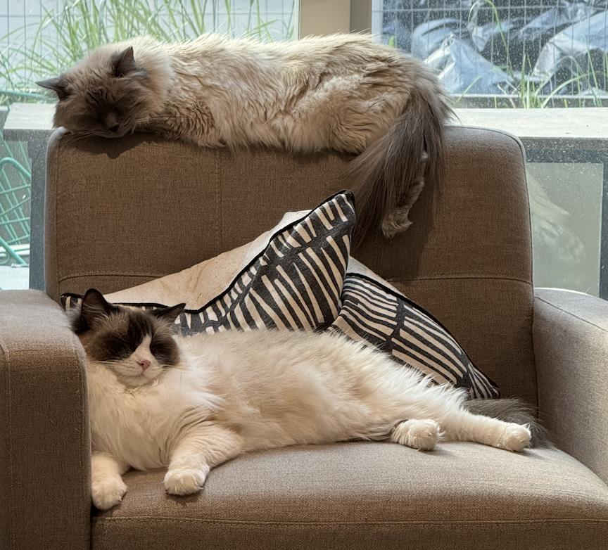
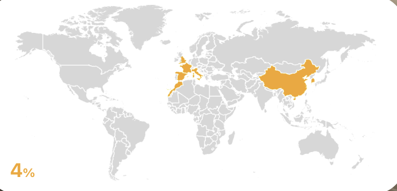
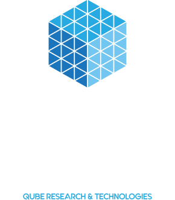

NOW
Principal Data Scientist · Associate Director
DTCC
Technology, Research and Innovation
Working across data science and emerging technology in financial market infrastructure, with a focus on applying new approaches to practical problems.
BIO
Principal Data Scientist · Associate Director
DTCC · Technology, Research and Innovation
I’m a London-based data scientist working across applied AI research and engineering, predictive analytics, and financial technology. I studied physics before moving into financial services, working first in investment banking and then in quantitative operations. I now work in financial market infrastructure.
Outside work, I explore agentic systems, LLM harnesses, knowledge graphs, and practical developer tools. I also share my home with two cats, Liz and Oreo.


DTCC
Technology, Research and Innovation
Working across data science and emerging technology in financial market infrastructure, with a focus on applying new approaches to practical problems.
Qube Research & Technologies
Worked in central-functions operations at a quantitative research firm, close to systems and workflows supporting research and trading teams.

Deutsche Bank
Worked across financial-services technology and data, building an early foundation in applying data and AI to complex systems.
A reusable assistant skill for working with Trading 212 portfolio data, built to make a personal finance workflow easier to inspect and use.
Explored real-time, in-lab optimisation of pulsed laser outputs using machine-learning algorithms.
Designed a decision tree to detect signals from particle-collider experiments, reaching 99% accuracy. In a 25-person team, led weekly progress reporting to the module supervisor.
Used BeautifulSoup to extract text and links from 1,000 Wikipedia pages, clustered physicists into five groups with unsupervised NLP, then modelled their connections and relative importance using five network metrics.
Socials